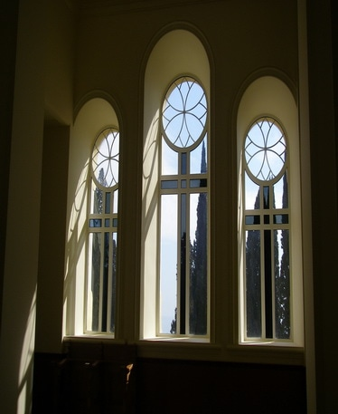
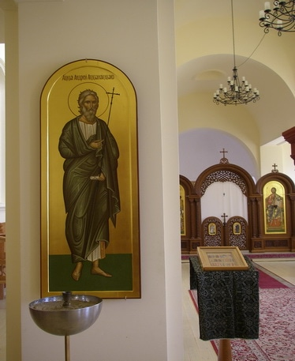
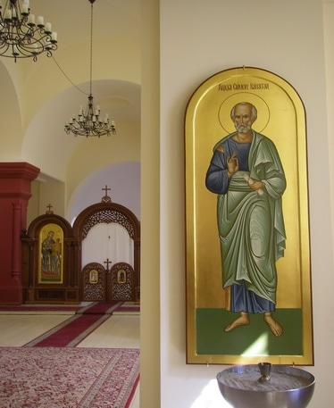
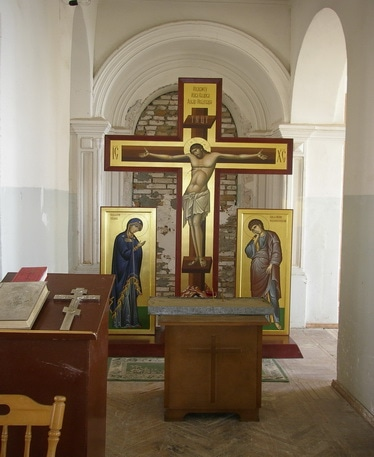
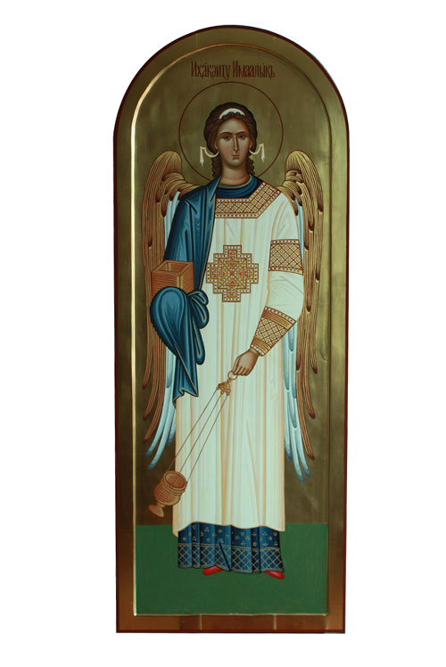
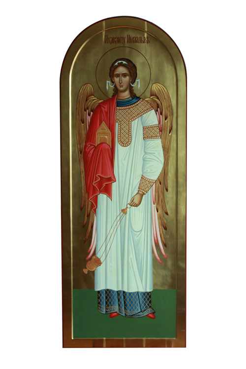

19 03 2011 (2247 дней 8 часов назад)
В день памяти Святого апостола Андрея первозванного в Новом Афоне освятили восстановленный храм.

Сегодня, в День памяти Святого апостола Андрея Первозванного, в Новом Афоне состоялось освящение восстановленного храма в честь апостола, просветителя Абхазии.
Службу вел управляющего Пицундской и Сухумской епархий иерей Виссарион Аплиаа. сообщил Апсныпресс референт главы Абхазской Православной Церкви Герман Маршания.
Инициатором восстановления храма стал секретарь Управления Епархиального совета Абхазской Православной Церкви иеромонах Андрей (Ампар). Реставрация заняла около года.
«К сожалению, ни один храм в обители не был приспособлен для отправления монашеской практики и иноческого правила, поэтому и возникла необходимость скорейшей реставрации храма», - уточнил Маршания.
Он сообщил, что центральный собор Св. Пантелеймона после масштабных работ по защите фундамента от размыва грунтовых вод, теперь нуждается во внутреннем благоустройстве. «При такой массовой посещаемости туристов и паломников в течение всего дня крайне трудно сохранить молитвенную обстановку и потому созрело решение о реставрации», - уточнил Маршания.
Иеромонах Андрей (Ампар) заказал в мастерской краснодарского иконописца В. Бутова иконы в византийском стиле с надписями на абхазском языке (Иисуса Христа, Божьей Матери и двух ангелов) для иконостаса. Заказаны еще две настенные иконы: просветителей Абхазии - Симона Кананита и Андрея Первозванного. Все иконы расписаны золотом.
В краснодарских резных мастерских А.Котлярова заказаны детали для убранства храма: стасидии, престол, жертвенник, архиерейское седалище и пр. Двери и окна храма сделаны в монастырских мастерских абхазскими репатриантами Ахматом Кушба и Амиром Куджба.
«Теперь в восстановленном храме можно отправлять богослужения в любое время дня и ночи, а также вне зависимости от сезона, зимой и летом», - сказал Герман Маршания.
На церемонии освящения присутствовал посол России в Абхазии Семен Григорьев.
Сегодня, в День памяти Святого апостола Андрея Первозванного, в Новом Афоне состоялось освящение восстановленного храма в честь апостола, просветителя Абхазии.

Службу вел управляющего Пицундской и Сухумской епархий иерей Виссарион Аплиаа. сообщил Апсныпресс референт главы Абхазской Православной Церкви Герман Маршания.

Инициатором восстановления храма стал секретарь Управления Епархиального совета Абхазской Православной Церкви иеромонах Андрей (Ампар). Реставрация заняла около года.

«К сожалению, ни один храм в обители не был приспособлен для отправления монашеской практики и иноческого правила, поэтому и возникла необходимость скорейшей реставрации храма», - уточнил Маршания.

Он сообщил, что центральный собор Св. Пантелеймона после масштабных работ по защите фундамента от размыва грунтовых вод, теперь нуждается во внутреннем благоустройстве. «При такой массовой посещаемости туристов и паломников в течение всего дня крайне трудно сохранить молитвенную обстановку и потому созрело решение о реставрации», - уточнил Маршания.
Иеромонах Андрей (Ампар) заказал в мастерской краснодарского иконописца В. Бутова иконы в византийском стиле с надписями на абхазском языке (Иисуса Христа, Божьей Матери и двух ангелов) для иконостаса. Заказаны еще две настенные иконы: просветителей Абхазии - Симона Кананита и Андрея Первозванного. Все иконы расписаны золотом.
В краснодарских резных мастерских А.Котлярова заказаны детали для убранства храма: стасидии, престол, жертвенник, архиерейское седалище и пр. Двери и окна храма сделаны в монастырских мастерских абхазскими репатриантами Ахматом Кушба и Амиром Куджба.

«Теперь в восстановленном храме можно отправлять богослужения в любое время дня и ночи, а также вне зависимости от сезона, зимой и летом», - сказал Герман Маршания.

На церемонии освящения присутствовал посол России в Абхазии Семен Григорьев.
Прикреплённые файлы:
{kind=link}
{kind=link}